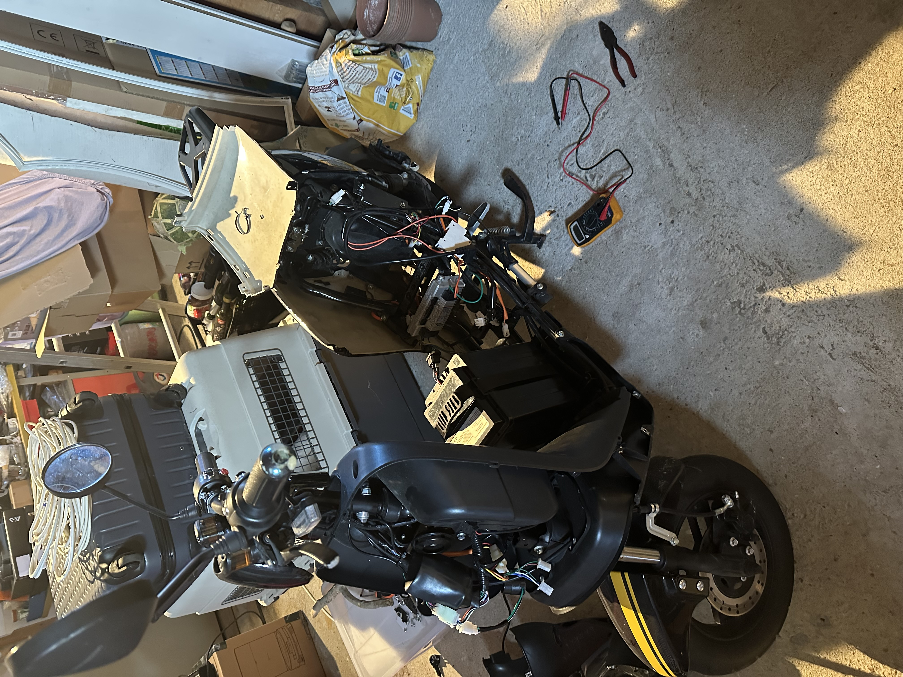
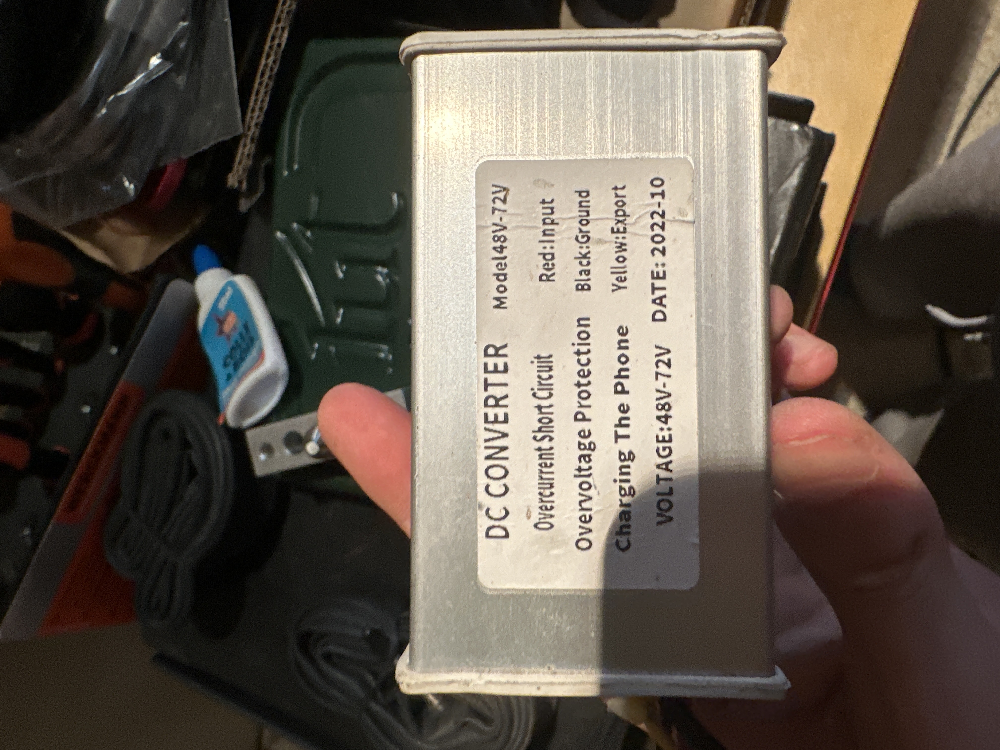

Projets Personnels & Loisirs
Au-delà de ma formation universitaire en GEII, j'aime appliquer mes connaissances techniques sur mon temps libre à travers des projets concrets et maintenir un équilibre dynamique grâce au sport.
Mes Initiatives Personnelles
Réparation d'un contrôleur de scooter électrique
Électronique de puissance & DiagnosticSuite à une panne matérielle, le contrôleur de mon scooter électrique a cessé de fonctionner. Plutôt que de le remplacer directement, j'ai choisi de mettre à profit mes compétences en électronique pour diagnostiquer la panne pendant mon temps libre.
Démarche actuelle : Analyse du circuit de puissance, tests des composants (MOSFETs, condensateurs) à l'aide d'un multimètre et d'un oscilloscope pour identifier l'origine du dysfonctionnement (surtension ou composant défectueux) et procéder à sa soudure et réparation.


Cursus Sportif & Loisirs
Le sport occupe une place importante dans mon quotidien, m'apportant rigueur, esprit d'équipe et endurance.